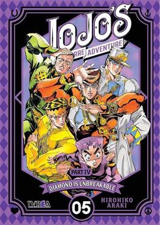
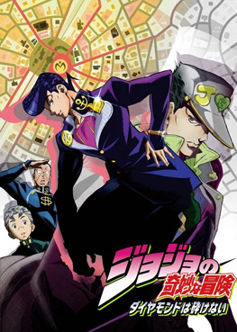

Opening
Great Days
Portada
Manga
anime
Historia del manga/anime
JoJo’s Bizarre Adventure Parte 4, titulada Diamond is Unbreakable, se publicó como manga entre 1992 y 1995. La historia sigue a Josuke Higashikata, un adolescente con un extraño peinado y el poder de su Stand Crazy Diamond, que puede reparar objetos y curar heridas. Josuke vive en la tranquila ciudad de Morioh, donde descubre que existen personas con Stands, algunos con intenciones maliciosas. Junto a sus amigos, incluyendo a Koichi, Okuyasu y Jotaro, Josuke investiga misteriosos asesinatos y fenómenos extraños, tratando de proteger a los habitantes de la ciudad mientras se enfrenta a poderosos enemigos, entre ellos el terrorífico Yoshikage Kira, un asesino en serie obsesionado con mantener su anonimato.
El anime de Diamond is Unbreakable se emitió entre 2016 y 2017, adaptando los 39 episodios del manga. La serie combina el suspenso, el humor y los típicos combates estratégicos de Stands, mostrando una ciudad que parece pacífica pero oculta secretos peligrosos y extravagantes.
Un dato curioso de esta parte es que la inspiración para la ciudad de Morioh proviene de lugares reales de Japón, como la ciudad de Sendai, y que la narrativa mezcla la vida cotidiana con elementos sobrenaturales, haciendo que incluso los enfrentamientos más extraños se sientan conectados a la vida diaria. Además, muchos Stands en esta parte tienen habilidades muy originales, como Echoes, que puede producir efectos de sonido con poderes físicos, mostrando la creatividad creciente de Hirohiko Araki en la saga.